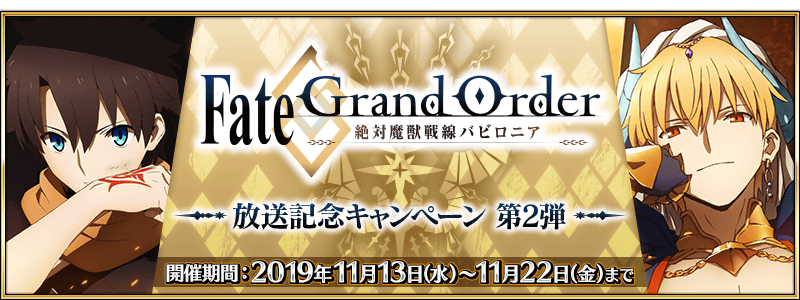
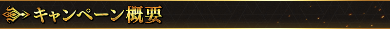
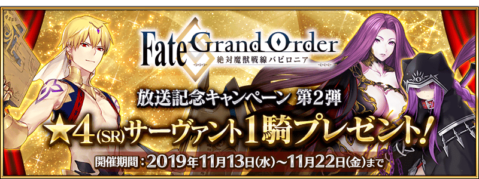
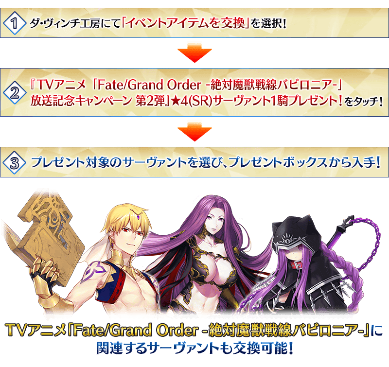
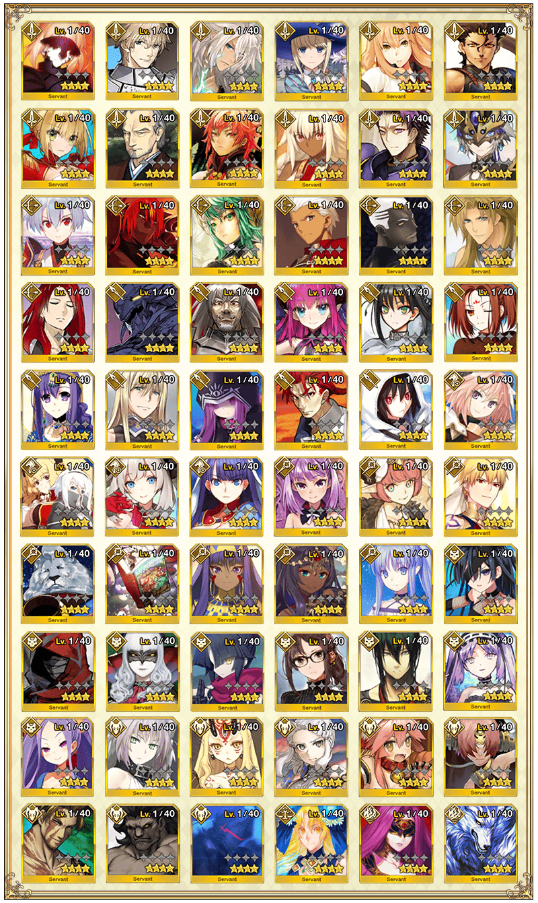
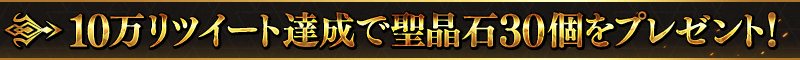
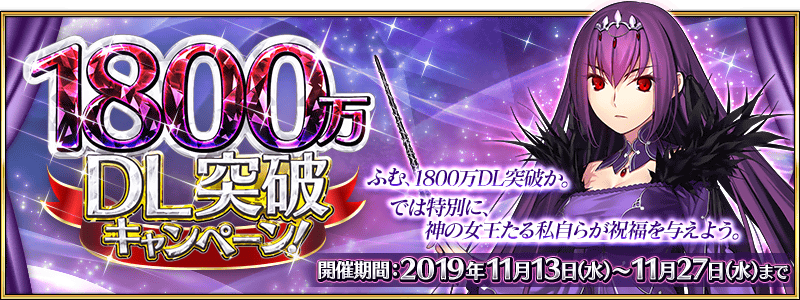

現在、TV動畫「Fate/Grand Order -絕對魔獸戰線巴比倫尼亞-」好評放送中！
為了記念該放送，舉辦『TV動畫「Fate/Grand Order -絕對魔獸戰線巴比倫尼亞-」放送記念宣傳活動 第2彈』！
◆舉辦期間◆
2019年11月13日(三) 20:00～11月22日(五) 11:59

在下述配發期間中登入的話，贈送可從包含在TV動畫「Fate/Grand Order -絕對魔獸戰線巴比倫尼亞-」登場的吉爾伽美什(Caster)、戈爾貢、美杜莎(Lancer)對象★4(SR)從者全60位之中，選擇喜愛的1位交換的『TV動畫「FGO巴比倫尼亞」放送記念第2彈券』1張！
◆『TV動畫「FGO巴比倫尼亞」放送記念第2彈券』配發期間◆
2019年11月13日(三) 20:00～11月20日(三) 11:59
※所有的御主對象(新御主玩家必須推進至通過「特異點F 炎上汙染都市 冬木 第3節 進行度1」)。
※請注意超過上述配發期間的話無法領取『TV動畫「FGO巴比倫尼亞」放送記念第2彈券』。
◆於達文西工房的交換條件◆
2019年11月22日(五) 11:59前通過「特異點F 炎上汙染都市 冬木」的御主對象
◆『TV動畫「FGO巴比倫尼亞」放送記念第2彈券』交換期間◆
2019年11月15日(五) 17:00～11月22日(五) 11:59
◆券的交換方法◆

◆有關券的注意◆
※請注意『TV動畫「FGO巴比倫尼亞」放送記念第2彈券』配發期間與交換期間有所差異。
交換後的★4(SR)從者會送至禮物箱，『TV動畫「FGO巴比倫尼亞」放送記念第2彈券』消失。
※請注意就算未交換的情況，在交換期間結束後『TV動畫「FGO巴比倫尼亞」放送記念第2彈券』也會消失。
※請注意未滿足交換條件的情況，就算持有券的情況也無法交換★4(SR)從者。
◆有關從者的注意◆
※在對象從者不包含期間限定從者及活動報酬的從者。
※關於隱藏真名尚未判明的從者，透過主線關卡的進行會讓從者及一部份份寶具的名稱變化。
※阿爾托莉亞・潘德拉剛〔Alter〕(Saber)、高文、尼祿・克勞狄烏斯(Saber)、柳生但馬守宗矩、馬嘶、Emiya〔Alter〕、崔斯坦、阿爾托莉亞・潘德拉剛〔Alter〕(Lancer)、李書文(Lancer)、湯瑪斯・愛迪生、米德拉什的Caster(示巴的女王)、美狄亞〔Lily〕、加藤段藏、虞美人、戈爾貢就算通過章節前也能交換。
※本宣傳活動中會記載隱藏真名對象從者的真名。
◆贈送對象從者◆
| 職階 | 從者名 | 職階 | 從者名 |
|---|---|---|---|
| Saber | 阿爾托莉亞・潘德拉剛〔Alter〕 | Caster | 海倫娜・布拉瓦茨基 |
| 高文 | 俄刻阿諾斯的Caster(喀耳刻) | ||
| 齊格飛 | 吉爾伽美什 | ||
| 夏爾・德翁 | 湯瑪斯・愛迪生 | ||
| 鈴鹿御前 | 童謠 | ||
| 迪爾姆德・奧德利暗 | 尼托克里絲 | ||
| 尼祿・克勞狄烏斯 | 米德拉什的Caster(示巴的女王) | ||
| 柳生但馬守宗矩 | 美狄亞〔Lily〕 | ||
| 羅摩 | Assassin | Assassin・樂園 (望月千代女) | |
| 拉克什米・芭伊 | Emiya〔Assassin〕 | ||
| 蘭斯洛特 | 卡米拉 | ||
| 蘭陵王 | 加藤段藏 | ||
| Archer | Archer・地獄 (巴御前) | 虞美人 | |
| 馬嘶 | 新宿的Assassin(燕青) | ||
| 阿塔蘭塔 | 絲西娜 | ||
| Emiya | 不夜城的Assassin(武則天) | ||
| Emiya〔Alter〕 | Berserker | 阿塔蘭塔〔Alter〕 | |
| 凱隆 | 茨木童子 | ||
| 崔斯坦 | 黃金國的Berserker(彭忒西勒亞) | ||
| Lancer | 阿爾托莉亞・潘德拉剛 〔Alter〕 | 玉藻貓 | |
| 弗拉德三世〔EXTRA〕 | 弗蘭肯斯坦 | ||
| 伊莉莎白・巴托里 | 貝奧武夫 | ||
| 秦良玉 | 海克力斯 | ||
| 哪吒 | 蘭斯洛特 | ||
| 帕爾瓦蒂 | Ruler | 阿斯特蕾亞 | |
| 芬恩・麥克庫爾 | |||
| 美杜莎 | Avenger | 戈爾貢 | |
| 李書文 | 新宿的Avenger (海森・羅伯) | ||
| 瓦爾基里 | |||
| Rider | 阿斯托爾福 | ||
| 安妮・伯妮＆瑪莉・瑞德 | |||
| 瑪莉・安東尼 | |||
| 瑪爾大 |



官方推特上「『TV動畫「Fate/Grand Order -絕對魔獸戰線巴比倫尼亞-」放送記念宣傳活動 第2彈』對象★4(SR)從者之中給予喜愛1位！」推特的轉推數，於下述的期間內10萬轉推達成的話，向遊玩遊戲的所有御主贈送豪華報酬！
本次為了記念TV動畫「Fate/Grand Order -絕對魔獸戰線巴比倫尼亞-」的放送，贈送聖晶石30個(聖晶石召喚最大11次份)！
對象推特，請自下述URL確認。
對象推特:https://twitter.com/fgoproject/status/1194587321565249537
「Fate/Grand Order」官方推特:@fgoproject
※(聖晶石召喚最大11次份)限在同一個聖晶石召喚進行的情況。
◆舉辦期間◆
2019年11月13日(三) 官方推特上的推特刊載後～11月14日(四) 22:59
◆配發預定日◆
2019年11月15日(五) 17:00～11月22日(五) 11:59的期間中，在登入進行初次的時機點，贈與至禮物箱。
◆贈送對象◆
所有的御主對象
※在舉辦期間內達成10萬轉推的情況，新御主玩家必須在配發預定最終日的11月22日(五) 11:59推進至通過「特異點F 炎上汙染都市 冬木 第3節 進行度1」。
| 達成目標 (轉推數) |
達成報酬 | |
|---|---|---|
| 10萬轉推 | ||

|
聖晶石 30個 | |
※在舉辦期間內未達到達成目標轉推數的情況，及在期間內未登入的情況，無法領取達成報酬。
其他還有，「1800萬DL突破宣傳活動」和期間限定「1800萬DL記念Pick Up召喚」同時舉辦！
關於詳情，請自下述橫幅確認。
■「1800萬DL突破宣傳活動」詳細情報
